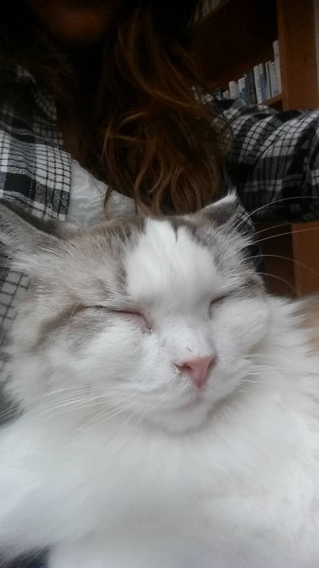
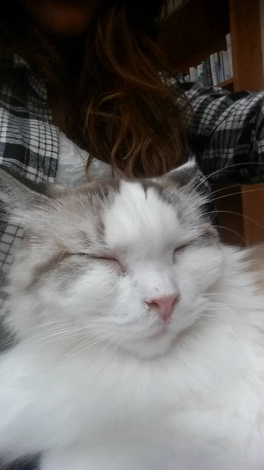

How South Korea Stole My Heart & My Seoul
I began my university career double majoring in anthropology and international studies with a minor in Japanese. My specialty was cultural anthrology, specifically focused on East Asia, and I was fascinated by how fundamentally different eastern versus western cultures are -- a collective versus individualistic society, the "sink together, swim together" mentality, the focus on the family versus oneself and filial piety, a culture molded by Buddhism versus Christianity, and so forth. I fell in love with several Asian languages, listened to traditional Chinese music and K-pop, read manga and studied the expansive history of China, Japan, and Korea, and tried to eat at as many ethnic restaurants as possible. I knew I wanted a career focused on working in east Asia, so what I needed to do was decide what I liked best. As a cultural anthropologist, it is vital to pick a specific interest area to focus your studies and work in. "East Asia" is far too broad and encompases far too many complex cultures to really work. I minored in Japanese for a year because my school didn't offer Korean, but South Korea was where my heart really was. I was captivated by the media coming out of the country, the incredible food, the friendliness of most Koreans towards foreigners (which was in stark contrast to another interest country of mine which shall go unnamed), the tumuluous history, and the resilience of the Korean people. I had the opportunity after my freshman year of college to attend a two month summer school at Yonsei University, which I flung myself at headfirst in desperation. I was fortunate enough to be accepted, much to my disbelief. It was finally time to see what South Korea was all about. I went into that summer school with just one reservation: what would the reality be? We all romanticize our ideas about people and places, and it is not until we are in the nitty gritty - lost the heart of the bustling city or seeing someone at their most vulnerable - that we learn what the reality is and our dreams are shattered. But honestly, from the moment I set foot on the plane that would take me there, the excitement I felt suffocated any shred of doubt that was lingering. It as finally happening.

Seoul
Luck was on my side in the summer of 2014. Classes were enjoyable if a bit difficult, my classmates were from all over the world so hanging out was a lot of fun, and I had the opportunity to live with two host families. The first lived too far from the school to make the stay worthwhile, though the family was kind and there was a Russian girl staying there as well. I still keep in touch with my host sister from the second family, and was grateful for the opportunity to see what Korean home life was like. My favorite part of the whole experience, though, was just wandering around Seoul, living life in a big city.

Cafe culture is huge in Korea, so you would be hard pressed to walk more than a block without seeing at least two cafes, and more commonly three or four. There's the usual Starbucks and Dunkin' Donuts, but there are also Korean chains like Tom'n Toms, Ediya, and Holly's. All serve great food and drinks as well as offer free wifi, so they are popular places to hang out. My favorite cafes, though, are the animal cafes. There are sheep, raccoon, dog, cat, and bird cafes where patrons pay just for a coffee before hanging out with the animals. In cat and dog cafes, they are free roaming and you can pet them as you please, while sheep cafes have segregated sheep areas that you need to move to in order to interact with the animals.
 


If cafes aren't your thing, there are endless bars, pubs, and pojangmacha, which are pop-up tents on the roadside specializing in soju and late night snack foods. Hungry but a little too tipsy to sit down somewhere public? Just stumble home and order delivery food! You can order anything, anytime, from McDonalds to fried chicken to traditional Korean foods like jjigae (stew) or jokbal (pig's trotters). Some of my best memories are being huddled around on the floor with friends, eating pizza and fried chicken after a long day.

Let's continue on the topic of food. If your experience with Korean food consists of instant ramyun, I urge you to explore. For beginners, you can't go wrong with Korean BBQ, consisting of numerous meats, rice, banchan (side dishes, of which there will be many), sauces, and a soup or stew to accompany. If you find you've eaten all of your food save for the tasty sauces at the botton of the communal dish, many establishments will then make fried rice for you to round out your meal. My personal favorite is dwejikogi-kkeopdegi, which is pig skin. I know, I know, you're probably getting squeamish but take my word on this: it is divine. Chewy, sweet, soft skin is fried up and then dipped in your choice of sauce. There is no better pairing for Korean beer, except maybe somek, the popular drink made by mixing beer and soju. Korea is also well known for its street food. If you are feeling peckish but have to catch that next bus, you can grab ddeokbokki (spicy rice cakes), hoddeok (a sweet pancake), kimbap (similar to sushi), or weird, delicious hotdogs covered in french fries. Korea is a food lover's paradise, from the seafood of the coasts to the hearty dishes found in the center of the country.


Korean convenience stores are actually great places to grab some food as well, whether you want a quick grab-and-go bite or want to heat up one of the ready made meals to sit and enjoy in the store. You can find everything from cocktails to ice cream to korean lunchboxes, called doshirak. I relied heavily on 7/11's steak kimbap for the first week or so of my time in Korea trying to find my way around, and it's actually still one of my favorite things to eat when I go back. There are convenience stores everywhere, of course, but the korean convenience store is certainly an experience in and of itself.

Korean beauty is famous the world over now, and for good reason. There are endless shops filled with 7-step skincare routines, sheet masks, haircare products, makeup, and colored contacts. The prices are fairly affordable, and almost every single store will offer you handfuls of freebies with your purchase, called service (this is often the case with restaurants as well). Fashion stores are abundant as well, and in big cities you have the choice of fast fashion stores on the main drags or the street vendors in the alleys, who hawk their wholesale wares. I'm 5'1, so the length of the garmets certainly fit, but the Korean standard of beauty dictates a woman must be incredibly slender, so for those with curves or a big bust, beware that you will likely have trouble finding clothes. It is still fun to shop and see the differing street styles though, especially given how different they usually are from the U.S.
If you are looking for other forms of entertainment, there are various "rooms" to visit. Space is extremely limited in Seoul, so to get around this, there are places designed for you to get away for a few hours at a time. PC rooms are the most well known, where you can sit and game for hours on end, but there are also console rooms, karaoke rooms, study rooms, manga rooms, and DVD rooms (please note that you must be very careful with DVD rooms, they are not intended to watch DVDs and foreigners need to understand that when someone invites them). For students whose every waking moment is dictated by their parents or their school schedule, rooms can be a haven. Korea's top export was K-pop for a long time, so competition for spots at companies or good schools is fierce. No matter what you do, you have to be the best. Students will often head right to private tutoring or after-school classes when their schoolday ends, not returning home until late at night. The stress gets so bad during exam times that many schools lock the doors to the roof to ensure students cannot throw themselves off, which is a dark, horrific reality to think about. I like to think that rooms allow students some breathing room to get a snack, indulge in a game or book, and just be a kid for a while without the pressure of everyday life. As a visitor, I am lucky to indulge in it and not have to worry about the other side, although I felt the pressures of Korean-style studying.
My favorite pasttime, aside from eating, obviously, is to sightsee. For my first two trips, I was primarily in Seoul, but it is such a vast city that you can't really get bored of exploring. The city is surrounded by mountains, so if you enjoy hiking you don't need to go far. Seoul also presents a beautiful juxtaposition, the marrying of old and new with ancient temples and palkaces right in the heart of the bustling, traffic-filled city. It is unlike anywhere else in the world. However, my favorite place in Seoul is the Han River, which runs through the city and divides the north from the more affluent south (think Korean Hollywood). You can rent bikes to ride around, play frisbee, bring your dogs, go camping, or just sit around and take in the beauty. You can order food to be brought directly to where you are sitting in the park, or go to one of the convenience stores for alcohol and instant ramyun. It's an amazing place to sit with friends in the summer, eating and looking at the beautiful lights. There is often live music as well. Aside from the Han River, the cheonggyecheon is a famous spot, as is N Seoul Tower, where you can climb to the top and see over all of Seoul. It's a lot of walking, but the views are worth it. Plus, what waits at the top? You guessed it -- food and beer! There are gift shops as well, offering souviners for reasonable prices.


Jeju Island
We took a field trip to Jeju Island during that first summer school, known for its tropical weather and atmosphere, great seafood, and scenic views of Mount Halla. As a beginning Korean language student at the time, the best part to me was the local dialect, considered by many scholars to be a language in itself - we had to have an interpreter to interpret the Jeju dialect of the bus driver to standard korean for our teachers! It was a refreshing change of pace from Seoul, taking in the beautiful ocean views, hiking along cliffsides, and even seeing a circus. Jeju is also well known for its female divers, known as haenyeo, who represent a matriartical society in Jeju that is quite distinct from the culture found on the mainland. If history, seafood, the water, or culture interests you, Jeju Island is worth a visit. Just a one hour plane ride from Seoul, I recommend it if you ever have the opportunity.
Lingering Thoughts
I had the amazing opportunity to visit Korea thrice for study, twice being in Seoul and the third in Gwangju, a large city in the rural heart of the country. I know I am fortunate to live in the U.S. with the opportunities it affords, but Korea will always have my heart. I love the lifestyle, the language, the ability to travel to the ocean or stunning countryside with a quick train ride, the museums and historical centers, the food, and the memories. I have experienced overt racism in Korea, and as a foreigner there will always be places where you are not welcome, but most people are kind, excited to share their culture with you, and eager to meet international friends. My dream for years was to teach English there. I became TESOL/TEFL certified and was discussing schools with a recruiter at the time I was hit by a car. Obviously that changed everything, but I have not given up on Korea. Now my dream would be to have a career as a developer working for a company with international offices so that I might one day re-locate. I am open to anywhere abroad, but South Korea will be my first choice every time.